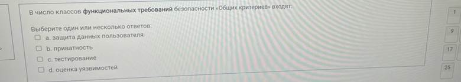
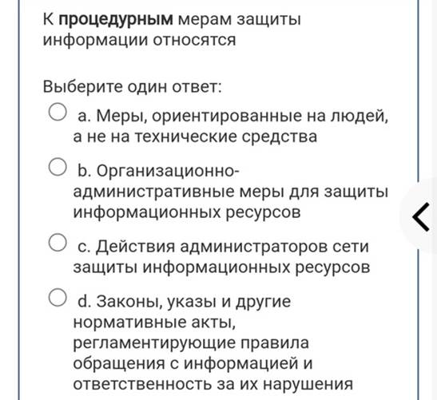

1. Какой подход к обеспечению безопасности имеет место
2. 503 service
3. К основным угрозам целостности информации не относится
4. Окно опасности появляется когда
5. Какая категория является наиболее рискованной для компании с точки зрения вероятного мошенничества и нарушения безопасности
6. К процедурам защиты информации относятся
7. Какой из этапов не входит в процесс управления рисками
8. Каким термином называется любая информация относящаяся к прямо или косвенно определенному или определяемому физическому лицу
9. Закон Об информации, информационных технологиях и о защите информации не регулирует отношения при
10. Какой закон в числе своих принципов содержит гарантии
недопущения сбора, хранения, использования о частной жизни лица без его
согласия
11. В какой модели доступа каждого объекта существует субъект-владелец, который сам определяет тех, кто имеет доступ к объекту, а также разрешенные операции доступа
12. Сигнатура атаки - это
13. Пользователи А, В, С обмениваются сообщениями, зашифрованными по алгоритму RSA. Пользователи сгенерировали по паре ключей – открытому и секретному. На каком ключе должен зашифровать сообщение абонент В для отправки абоненту А
14. Центральным для программно-технического уровня является понятие
15. Таблица замены
16. Требования к средствам защиты и их выбор в каждом конкретном случае зависит от
17. Сопоставьте
18. Что такое персональные данные
19. В стандарте Общие критерии наиболее общая предметная группировка требований определяет
20. Основной документ, на основе которого проводится политика информационной безопасности
21. Какие вопросы должны отражаться в политике безопасности среднего уровня
22. В число направлений физической защиты входят
23. Каким из перечисленных требований должен удовлетворять надежный пароль
24. Что из перечисленного относится к идентификации и/или аутентификации людей на основе их физиологических характеристик
25. Какой из сервисов безопасности позволяет специфицировать и контролировать действия, которые субъекты могут выполнять над объектами
26. Основой программы безопасности организации является
27. Какой чати нет в стандерте общие критерии
28. Выдача одноразового бумажного пропуска на территорию оператора считается
29. В каком документе содержится состав, содержание и сроки работ по разработке и внедрению систем защиты персональных данных
30. Выдача бумажного талончика к врачу считается
31. Какого из перечисленных принципов нет в законе Об информации
32. Какие действия в уголовном кодексе РФ классифицируется как престпление в сфер компьютерной информационной
33. Каким термином можно назвать защизаемые государствоми сведения
34. В рамках трехбальной шкалы величина риска равная 6
35. К программно-техническим мерам защиты информации относятся

36. Злоумышленником называю
37. Какая из перечисленных угроз информационной безопасности является преднамеренной
38. Наиболее опасным источником угроз информационной безопасности и предпроиятия являются
39. К числу основных аспектов информационной безопасности не относится
40. Зашифруйте
41. Вы получили письмо
42. Для реализации каких сервисов безопасности могут быть использованы криптографисческие методы
43. Под протоколированием понимают
44. База данных защиты строится на основе
45. Расшифруйте
46. Что из перечисленного относится к сервисам шифрования
47. Какая модель доступа реализована в операционных системах

48. Какие сущности может предоставить субъект чтобы подтвердить свою подленность
49. Установите праильныу последовательность этапов планирования восстановительных работ
50. На каком уровне утверждается политика информационной безопасности организации
51. В число вопросов политики безопасности верхнего уровня входят
52. В число классов функциональных требований безопасности общих критериев входят 
53. К какой категории относятся персональные данные, позволяющие идентифицировать субъекта
54. Что является основанием для включения оператора в ежегодный план проверок ФСТЭК
55. Федеральные законы и другие нормативаные..
56. Согласно Закона РФ Об информации Информация -
57. К административным мерам защиты информации относят
58. Какие мотивы нарушителя можно выделить как основыне
59. Угроза это

60. Защита информации это
61. Политика безопасности строится на основе
62. Информация об уголовной ответственности за преступление в сфере компьютерной информации описана в
63. В законе о государственной тайне
64. Процесс управления рисками
65. К законодательным мерам защиты информации относятся
66. В какой модели доступа набор разрешенных операций доступа субъекта определяется его видом деятельности в системе
67. Атака на пароль осуществляющая перебор
68. Аутентификация позволяет
69. Кто должен своевременно обнаруживать факты несанкционированного доступа
70. К какой категории персональных данных сведения о национальной принадлежности
71. Зашифруйте
72. Что из перечисленного относится к сервисам безопасности

73. При протоколировании событий рекомендуется записывать следующею информацию
74. Какой документ отражает полномочия пользователя по выполнению конкретных действий
75. Какой пароль невозможно подобрать методом простого перебора
76. В соответствии с нормами российского законодательства
защита информации …

77. По отношению к выявленным рискам возиожны следующие действия
78. Какая из перечисленных угроз информационной безопасности является непреднамеренной
79. Как называется совокупность условий и факторов, создающих потенциальную или реальную существенную опасность нарушения безопасности информации
80. Доступность информации это
81. Попытка реализации угрозы информационной безопасности это
82. Зашифруйте
83. В симметричных алгоритмах шифрования

84. Расшифруйте
85. Какой части нет в стандарте Общие критерии
86. К процедурным мерам защиты информации относятся 
87. Что из перечисленного не является целью проведения анализа рисков
88. В каком законодательном документе определено понятие профиля защиты
89. Какое свйоство информации требуется обеспечить в типовых
90. Какими категориями пользователей
91. В число целей верхнего уровня
92. В число классов мер процедурного уровня входят
93. Установите соответствие модели доступа
94. Опреативный аудит с автоматическим реагированием
95. К основным угрозам доступности не относится
96. В отношении информации, доступ к котрой ограничен
97. Сопоставьте персональные данные с их видами
98. Установите какому уровню …
99. Какие из перечисленных мероприятий направлены на поддержание работоспособности
100.